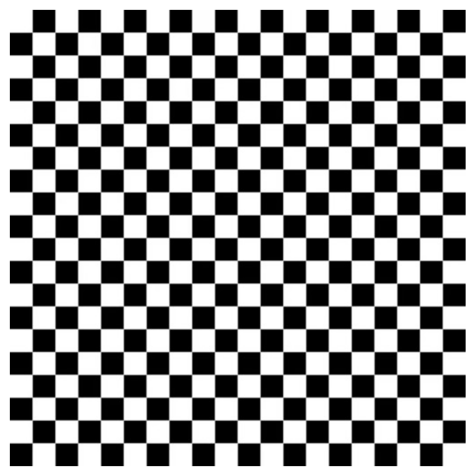
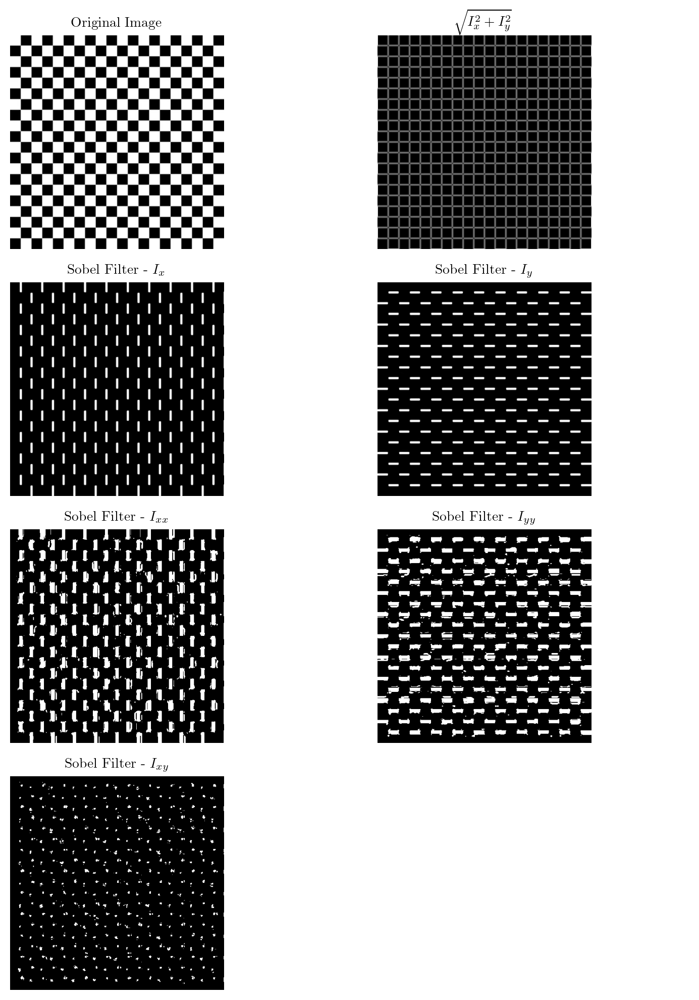
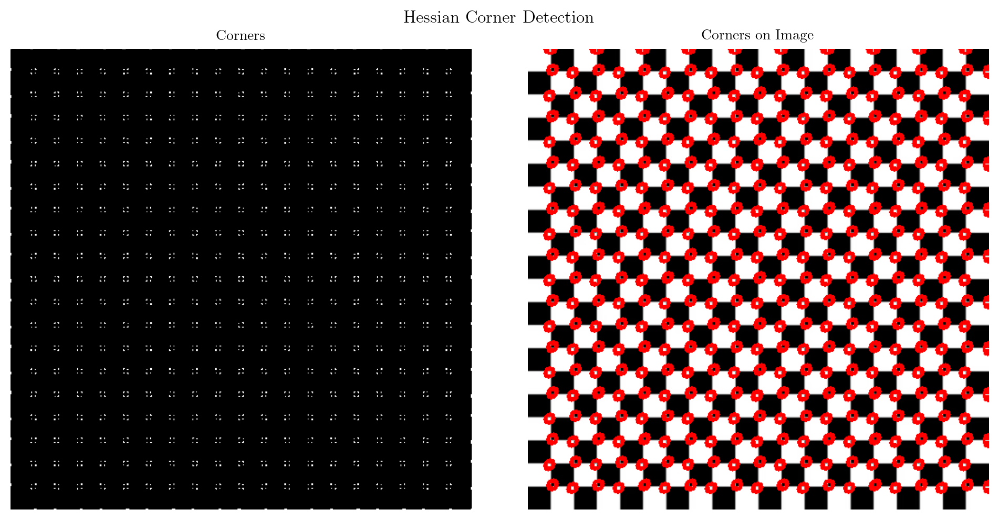

import numpy as np
import cv2
import matplotlib.pyplot as plt
from latex import latexify
latexify(columns = 2)
%matplotlib inline
%config InlineBackend.figure_format = 'retina'image = cv2.imread('./images/B/board.jpg', 1)
print(image.shape)(512, 512, 3)plt.figure(figsize=(6, 6))
plt.imshow(cv2.cvtColor(image, cv2.COLOR_BGR2RGB))
plt.axis('off')
plt.show()
Harris Corner Detection
Reference: https://medium.com/jun94-devpblog/cv-10-local-feature-descriptors-harris-and-hessian-corner-detector-7d524888abfd
from scipy.ndimage import convolve
def sobel_filter(image):
Gx = np.array([[-1, 0, 1], [-2, 0, 2], [-1, 0, 1]], dtype = np.float32)
Gy = np.array([[1, 2, 1], [0, 0, 0], [-1, -2, -1]], dtype = np.float32)
img = image.astype(np.float32)
img = cv2.GaussianBlur(img, (5, 5), 1.4)
Ix = convolve(img, Gx, mode='constant', cval=0.0)
Iy = convolve(img, Gy, mode='constant', cval=0.0)
G = np.hypot(Ix, Iy)
G = G / G.max() * 255
G = G.astype(np.uint8)
return np.clip(Ix, 0, 255).astype(np.uint8), np.clip(Iy, 0, 255).astype(np.uint8), Gim = cv2.cvtColor(image, cv2.COLOR_BGR2GRAY)
Ix, Iy, G = sobel_filter(im)
Ix_ = Ix.astype(np.float32)
Iy_ = Iy.astype(np.float32)
Ixx = Ix_**2
Iyy = Iy_**2
Ixy = Ix_ * Iy_
fig, axes = plt.subplots(4, 2, figsize=(8, 10))
axes[0, 0].imshow(cv2.cvtColor(im, cv2.COLOR_BGR2RGB))
axes[0, 0].axis('off')
axes[0, 0].set_title('Original Image')
axes[0, 1].imshow(cv2.cvtColor(G, cv2.COLOR_BGR2RGB))
axes[0, 1].axis('off')
axes[0, 1].set_title(r'$\sqrt{I_x^2 + I_y^2}$')
axes[1, 0].imshow(cv2.cvtColor(Ix, cv2.COLOR_BGR2RGB))
axes[1, 0].axis('off')
axes[1, 0].set_title(r'Sobel Filter - $I_x$')
axes[1, 1].imshow(cv2.cvtColor(Iy, cv2.COLOR_BGR2RGB))
axes[1, 1].axis('off')
axes[1, 1].set_title(r'Sobel Filter - $I_y$')
axes[2, 0].imshow(cv2.cvtColor(Ixx, cv2.COLOR_BGR2RGB))
axes[2, 0].axis('off')
axes[2, 0].set_title(r'Sobel Filter - $I_{xx}$')
axes[2, 1].imshow(cv2.cvtColor(Iyy, cv2.COLOR_BGR2RGB))
axes[2, 1].axis('off')
axes[2, 1].set_title(r'Sobel Filter - $I_{yy}$')
axes[3, 0].imshow(cv2.cvtColor(Ixy, cv2.COLOR_BGR2RGB))
axes[3, 0].axis('off')
axes[3, 0].set_title(r'Sobel Filter - $I_{xy}$')
axes[3, 1].axis('off')
plt.tight_layout()
plt.show()Clipping input data to the valid range for imshow with RGB data ([0..1] for floats or [0..255] for integers).
Clipping input data to the valid range for imshow with RGB data ([0..1] for floats or [0..255] for integers).
Clipping input data to the valid range for imshow with RGB data ([0..1] for floats or [0..255] for integers).
Harris Corner Detector
The Harris corner detection method is based on the structure tensor (or second-moment matrix) \(M\), which is computed from image gradients. The gradients \(I_x\) and \(I_y\) can be obtained using Sobel operators:
\[ G_x = \begin{bmatrix} -1 & 0 & 1 \\ -2 & 0 & 2 \\ -1 & 0 & 1 \end{bmatrix}, \quad G_y = \begin{bmatrix} 1 & 2 & 1 \\ 0 & 0 & 0 \\ -1 & -2 & -1 \end{bmatrix} \]
Where: - \(G_x\) is the Sobel filter for calculating the horizontal gradient. - \(G_y\) is the Sobel filter for calculating the vertical gradient.
The image gradients \(I_x\) and \(I_y\) are computed as:
\[ I_x = G_x \ast I, \quad I_y = G_y \ast I \]
The structure tensor \(M\) is constructed using these gradients:
\[ M = \begin{bmatrix} I_x^2 & I_x I_y \\ I_x I_y & I_y^2 \end{bmatrix} \]
The Harris response function \(R\) is calculated as:
\[ R = \det(M) - k \cdot \text{trace}(M)^2 \]
Where: - \(\det(M) = I_x^2 I_y^2 - (I_x I_y)^2\) is the determinant of the matrix. - \(\text{trace}(M) = I_x^2 + I_y^2\) is the trace of the matrix. - \(k\) is a constant, typically \(0.04\).
A corner is detected if \(R\) exceeds a threshold, indicating significant changes in intensity in both gradient directions.
def detect_harris_corner(image, k=0.04, window_size=3, threshold=1e-4):
if len(image.shape) == 3:
gray_image = cv2.cvtColor(image, cv2.COLOR_BGR2GRAY)
else:
gray_image = image
Ix, Iy, _ = sobel_filter(gray_image)
Ix = Ix.astype(np.float32)
Iy = Iy.astype(np.float32)
Ixx = Ix ** 2
Iyy = Iy ** 2
Ixy = Ix * Iy
Ixx = cv2.GaussianBlur(Ixx, (window_size, window_size), 1)
Iyy = cv2.GaussianBlur(Iyy, (window_size, window_size), 1)
Ixy = cv2.GaussianBlur(Ixy, (window_size, window_size), 1)
# Harris response R = det(M) - k(trace(M))^2
detM = Ixx * Iyy - Ixy ** 2
traceM = Ixx + Iyy
harris_response = detM - k * traceM ** 2
harris_response = harris_response / harris_response.max()
corners = np.zeros_like(harris_response)
corners[harris_response > threshold] = 255
return corners.astype(np.uint8), harris_response
def draw_corners_on_image(image, corners, radius=5, color=(0, 255, 0)):
corner_img = image.copy()
corner_points = np.argwhere(corners == 255)
for point in corner_points:
y, x = point
cv2.circle(corner_img, (x, y), radius, color, 1)
return corner_imgcorners, harris_response = detect_harris_corner(image, k=0.04, window_size=3, threshold=0.01)
corners_image = draw_corners_on_image(image, corners, color = (255, 0, 0))
fig, axes = plt.subplots(1, 2, figsize=(10, 5))
fig.suptitle('Harris Corner Detection')
axes[0].imshow(corners, cmap='gray')
axes[0].axis('off')
axes[0].set_title('Corners')
axes[1].imshow(corners_image)
axes[1].axis('off')
axes[1].set_title('Corners on Image')
plt.tight_layout()
plt.show()Hessian Corner Detector
The Hessian corner detection method uses the Hessian matrix, which is computed from second-order derivatives of the image intensity. The second-order derivatives can be obtained using the following filters for the \(x\) - and \(y\) -directions:
\[ \frac{\partial^2}{\partial x^2} = \begin{bmatrix} 1 & -2 & 1 \\ 2 & -4 & 2 \\ 1 & -2 & 1 \end{bmatrix}, \quad \frac{\partial^2}{\partial y^2} = \begin{bmatrix} 1 & 2 & 1 \\ -2 & -4 & -2 \\ 1 & 2 & 1 \end{bmatrix}, \quad \frac{\partial^2}{\partial x \partial y} = \begin{bmatrix} -1 & 0 & 1 \\ 0 & 0 & 0 \\ 1 & 0 & -1 \end{bmatrix} \]
The second-order derivatives are computed as: \[ I_{xx} = \frac{\partial^2}{\partial x^2} \ast I, \quad I_{yy} = \frac{\partial^2}{\partial y^2} \ast I, \quad I_{xy} = \frac{\partial^2}{\partial x \partial y} \ast I \]
The Hessian matrix \(H\) is constructed using these derivatives:
\[ H = \begin{bmatrix} I_{xx} & I_{xy} \\ I_{xy} & I_{yy} \end{bmatrix} \]
The response function for corner detection is the Hessian determinant:
\[ R_H = \det(H) = I_{xx} I_{yy} - I_{xy}^2 \]
Corners are detected where \(R_H\) is large, indicating significant curvature in both directions.
def sobel_second_order(image):
Dxx = np.array([[1, -2, 1], [2, -4, 2], [1, -2, 1]], dtype=np.float32)
Dyy = Dxx.T
Dxy = np.array([[1, 0, -1], [0, 0, 0], [-1, 0, 1]], dtype=np.float32)
img = image.astype(np.float32)
img = cv2.GaussianBlur(img, (5, 5), 1.4)
Ixx = convolve(img, Dxx, mode='constant', cval=0.0)
Iyy = convolve(img, Dyy, mode='constant', cval=0.0)
Ixy = convolve(img, Dxy, mode='constant', cval=0.0)
return Ixx, Iyy, Ixy
def detect_hessian_corner(image, threshold=1e-4):
if len(image.shape) == 3:
gray_image = cv2.cvtColor(image, cv2.COLOR_BGR2GRAY)
else:
gray_image = image
Ixx, Iyy, Ixy = sobel_second_order(gray_image)
Ixx = Ixx.astype(np.float32)
Iyy = Iyy.astype(np.float32)
Ixy = Ixy.astype(np.float32)
# Hessian response R = det(H)
detH = Ixx * Iyy - Ixy ** 2
# Normalize the response for better visualization
detH = detH / np.max(detH)
# Apply threshold to get corner points
corners = np.zeros_like(detH)
corners[detH > threshold] = 255
return corners.astype(np.uint8), detHcorners, hessian_response = detect_hessian_corner(image, threshold=0.01)
corner_image = draw_corners_on_image(image, corners, radius=5, color=(0, 255, 0))
fig, axes = plt.subplots(1, 2, figsize=(10, 5))
fig.suptitle('Hessian Corner Detection')
axes[0].imshow(corners, cmap='gray')
axes[0].axis('off')
axes[0].set_title('Corners')
axes[1].imshow(corners_image)
axes[1].axis('off')
axes[1].set_title('Corners on Image')
plt.tight_layout()
plt.show()